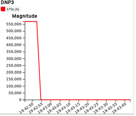

GridAPPS-D DNP3 Service¶
GridAPPS-D DNP3 service is an application service to integrate GridAPPS-D and a Distrbuted Newtork Protocol(DNP3)[1] based commercial product that allows operation, monitoring, analysis, restoration, and optimization of network operations to enable data exchange bewteen the applications. The DNP3 data exchange interface translates Common Information Model (CIM) standards data within GridAPPS-D to DNP3 packets and vice-versa to communicate with the DNP3 based software.Likewise, the service uses the existing GridAPPS-D platform to translate DNP3 data received from SurvalentONE. The use of GridAPPS-D made the development easier because of its standardized programming interface that unifies data integration.
Integration Architecture
This application is implemented as an application service consisting of python modules. DNP3 is a robust, efficient and interoperable protocol. Its compatibility with other protocols has made this integration easier. The integration is shown as a Master and Outstation link communication as shown in the figure below.

Figure 1: Integration architecture
The commercial tool used here is SurvalentONE[2], a DNP3 based SCADA system. The SurvalentONE SCADA system was configured as per the manuals provided by the Survalent Company. The Master server configuration includes creating a Station, Communication Link, Intelligent Electronic Device(IED) . The name and description of CIM measurement points of an IEEE model is added to a template (an excel sheet) containing all the DNP3 related metadata such as predefined datatypes, groups, variation. The template is created using a template maker provided by Survalent.Then the template is loaded in the Master IED of the Master server.
Once this configuration is done and the DNP3 application service is created,start the service by creating a simulation request. Since the service is added to gridapps container, it gets started as soon as the gridappsd service is started. A model dictionary file(CIM measurements) is generated for each simulation ID when a simulation request for a specific model is sent to the simulator(GridLAB-D). The simulation output from the simulator running under GridAPPS-D is received on the simulation output topic by the Message Bus.
The DNP3 service at the Outstation and also the Communication Line at the Master Server on startup initiate a connection request from the Master, to the IP address of the Outstation at port 20000. In our case, the Outstation listens on port 20000. The DNP3 points created from the CIM model dictionary file are loaded by the DNP3 service in the Outstation database with the datatype, attribute,
description etc. fields. The Master polls the Outstation every 60 seconds to update the realtime data. The service translates model dictionary data into DNP3 points as JSON structures.An example of a JSON packet loaded in the Outstation database and sent to the Master is shown below.
{
"attribute": "Switch.open",
"data_type": "DO",
"description":"Name:671692,ConductingEquipment_type:LoadBreakSwitchPhase:B,controlAttribute:Switch.open",
"group": 12,
"index": 14,
"measurement_id": "_56495819-9E14-DFEC-CC01-67526BBC9987",
"name": "564958199E14DFECCC0167526BBC9987",
"value": "0",
"variation": 1
}
The datatype, group and variation of the points are shown in the Table below.
Datatype Group Variation Examples Control/Status Sent From
-------------- ------ ---------- ---------------------- ----------------- ------------
Analog Output 42 3 Solar Panels, Capacitors, Regulators Control(Update set points) Master to Outstation
Analog Input 30 1 AC Line segment Measurement values Outstation to Master
Digital Output 12 1 Switches,reclosers Control, Enable, Disable Master to Outstation
Digital Input 1 2 Breakers Status Outstation to Master
The on_message function in the service code keeps on updating the real-time
values for all the DNP3 points in Master server. The status and amgnitude values updates can be seen in the User Interfaces(Point viewers) provided by Survalent.
SurvalentONE SCADA has the capability of controlling the points/measurements.
The output commands are generated using the point viewers’ user interface. For example, a switch can be turned ON/OFF by selecting the control option manually. Similarly, analog values the AC Line segment can also be modified. The control points can be chosen from the options in the telemetry of the points. For a binary point five different inputs can be sent. The control inputs are sent in the form of OpenDNP3 Control relay Output Block commands to the Outstation and translated to CIM difference messages, sent back to FNCS bridge and then to the simulator. OpenDNP3 is an implementation of the DNP3 communication in the form of a library which provides C++ programming APIs[3]. The analog points can also be modified in a similar way. The values can be set and sent as an OpenDNP3 AnalogOutputInt16 command. The command has the value and status as input to the Outstation.
Results
The integration was tested using a 13-bus system. The JSON stored in Oustation database as shown in the example above is created for all the CIM measurement values in the dictionary file. An example of logs from Outstation at service start-up is shown below.
Adding Point: PointDefinition 00730ee504e148bf917fe47d5be16e6f (30.1, index=0,type=Analog Input)
Recording DNP3 Analog measurement, index=88,value=564.143691452854
Recording DNP3 Binary measurement, index=10,value=True
Recording DNP3 Binary measurement, index=13,value=True
The control input from Master by sending a PULSE_OFF command for a switch which is an OpenDNP3 command sent from Master to Outstation as shown below.
cmdtype=Operate,command=<pydnp3.opendnp3.ControlRelayOutputBlock object at
0x7fd1f69527d8>,index=4,optype=OperateType.SELECT_BEFORE_OPERATE
Received DNP3 Point value ControlCode.PULSE_OFF (6ed7855451e84bc79db2c810d07509dd, 12.1.4, Operate)
command_code=CommandStatus.SUCCESS,command_code=ControlCode.PULSE_OFF,command_ontime=0
The above command was sent back by the GridAPPS-D service in the form of a CIM difference message to the simulation input topic as shown below.The forward_differences value is the current value/status and reverse_differences value contains the older value/status of the switch.
{ "command":"update",
"input":{
"simulation_id":"854814554",
"message":{ "timestamp":1568058139,
"difference_mrid":"8be2c7a6-7cef-4e0e-af91-4f5eff37cf90",
"reverse_differences":[
{
"object":"_56495819-9E14-DFEC-CC01-67526BBC9987",
"attribute":"Switch.open",
"value":1
}],
"forward_differences":[
{
"object":"_56495819-9E14-DFEC-CC01-67526BBC9987",
"attribute":"Switch.open",
"value":0 } ]
}}}
This received CIM message was processed and the below plot shows the state of the switch at Viz.

References¶
[1] G. R. Clarke, D. Reynders, and E. Wright, Practical modern SCADA protocols: DNP3, 60870.5 and related systems. London: Elsevier, 2008.
[2] Survalent Technology Corporation. “Survalent.”. https://www.survalent.com (accessed: Aug 2019).
[3] Automatak. “opendnp3”. https://dnp3.github.io/ (accessed: June 2019).